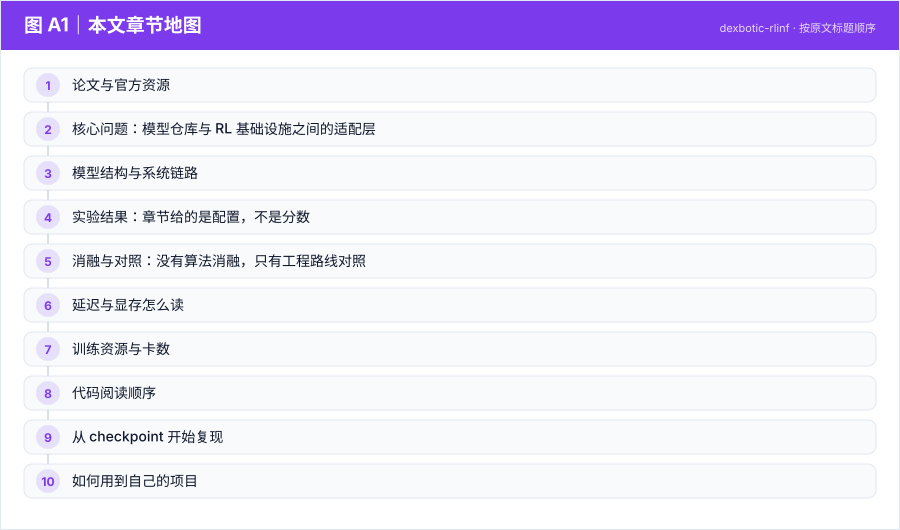
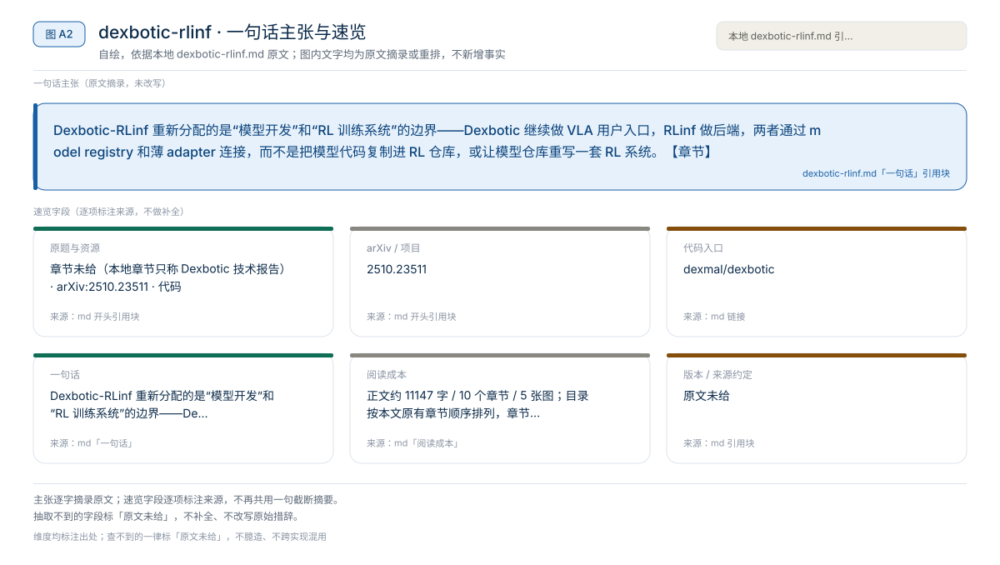
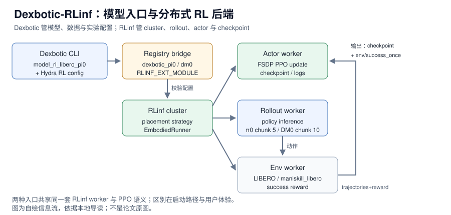
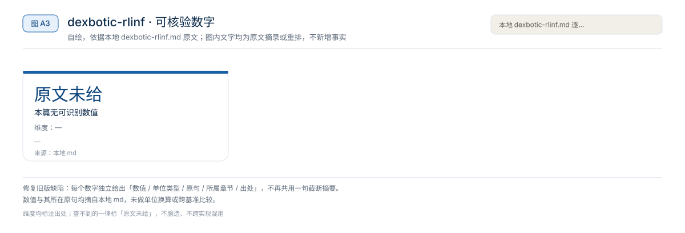

【VLA 精读 · 训练范式】Agentic-VLA：给 OpenVLA-OFT 加一个会设计奖励、引导探索、复用权重的在线适应外环
Agentic-VLA 重新分配的是“部署后如何继续学习”的接口——不再只靠人工补示教或固定奖励，而是让 Experience Memory、VLM 探索 critic 和语言模型奖励分解共同调度一次在线 RL 适应。【章节】
训练范式
Dexbotic-RLinf 重新分配的是“模型开发”和“RL 训练系统”的边界——Dexbotic 继续做 VLA 用户入口，RLinf 做后端，两者通过 model registry 和薄 adapter 连接，而不是把模型代码复制进 RL 仓库，或让模型仓库重写一套 RL 系统。【章节】
原题与资源：章节未给（本地章节只称 Dexbotic 技术报告） · arXiv:2510.23511 · 代码
一句话：Dexbotic-RLinf 重新分配的是“模型开发”和“RL 训练系统”的边界——Dexbotic 继续做 VLA 用户入口，RLinf 做后端，两者通过 model registry 和薄 adapter 连接，而不是把模型代码复制进 RL 仓库，或让模型仓库重写一套 RL 系统。【章节】
阅读成本：正文约 11147 字 / 10 个章节 / 5 张图；目录按本文原有章节顺序排列，章节内容未改动。
目录（点击跳到对应章节）：

图 A1：本文章节地图（节点即原文 h2 标题）。自绘，依据本文，不新增事实。
Dexbotic-RLinf 不是一个新 VLA 架构，而是把 Dexbotic 的模型、数据与实验配置，和 RLinf 的分布式 rollout、actor 训练、环境 worker、FSDP 与 checkpoint 管理拼成一条在线 PPO 后训练链路。公开示例的配置是 1 node / 8 GPUs，支持 LIBERO Spatial、Object、Goal、10 等 suite，模型是 Dexbotic π0 与 DM0，训练算法是 PPO；π0 的 num_action_chunks 为 5，DM0 为 10。本地章节没有给任何成功率、参数量、推理显存或延迟数字，因此这篇精读的重点是工程边界与可复现入口，不是 SOTA 排名。
来源约定：本文事实只取自本仓库 Dexbotic-RLinf 导读，没有用模型记忆补写论文细节。
标注约定：【文档】指本地章节转述的官方仓库/文档/技术报告；【章节】指本地章节自己的归纳；【未给】指章节没有提供。
版本：Dexbotic 技术报告 arXiv2510.23511；代码 commit 章节未给；查阅日期 2026-11-01。
| 资源 | 入口 | 状态 / 阅读用途 |
|---|---|---|
| 论文 | arXiv:2510.23511 | Dexbotic 技术报告；模型、数据与工具箱背景 |
| 源码（模型侧） | dexmal/dexbotic | 模型定义、Dexdata、Hydra 配置、评测脚本 |
| 源码（RL 侧） | RLinf/RLinf | cluster、worker placement、rollout、FSDP actor、PPO |
| 权重 | Dexmal/libero-db-pi0 / Dexmal/DM0-libero | LIBERO 用的 π0 与 DM0 checkpoint |
| 项目页 / 文档 | dexbotic.com/docs | 安装、模型、数据与评测说明 |
| 数据集 | LIBERO（章节只给基准名，未给数据集仓库链接） | 公开仿真基准；协议见 §4 |
论文题目：章节未给（本地章节只称 Dexbotic 技术报告）；arXiv：2510.23511；版本日期：章节未给；代码 commit：章节未给；查阅日期：2026-11-01。
版本提示： 章节没有给技术报告的版本号或旧版数字；全文只使用本地导读转述的当前公开入口。RLinf 配置、Docker tag 和 checkpoint 名称都可能随仓库更新，复现时以固定 commit 为准。

图 A2：一句话主张与速览字段。自绘，依据本文，不新增事实。
一句话：Dexbotic-RLinf 重新分配的是“模型开发”和“RL 训练系统”的边界——Dexbotic 继续做 VLA 用户入口，RLinf 做后端，两者通过 model registry 和薄 adapter 连接，而不是把模型代码复制进 RL 仓库，或让模型仓库重写一套 RL 系统。【章节】

图 1：Dexbotic-RLinf 的模型注册、worker 放置与 PPO 数据流。自绘，依据本地导读；不是论文原图。
对比主流路径：模型仓库自带 rollout/训练脚本，或 RL 仓库内置某个 VLA 实现 → 模型侧保留入口、RL 侧通过 registry 动态加载模型。

图 A3：本文可核验的数字摘录。自绘，依据本文，不新增事实。
一个具体任务走一遍 · 本文表格速查（以下均摘自原文，未作推算）：
Dexbotic 是 Dexmal 开源的 VLA toolbox，官方定位是 one-stop VLA development toolbox。章节把它分成三层：Data Layer 用 Dexdata 统一机器人数据格式，视频文件加 jsonl 描述 episode，jsonl 记录多视角图像、机器人状态和文本 prompt；Model / Modular Framework Layer 把 VLA 拆成 VLM 与 Action Expert，VLM 含 vision encoder、projector、LLM，Action Expert 可以是 diffusion、flow matching 或 autoregression；Experiment Layer 用 experiment-centric 方式组织训练、推理和评测，用户主要改 Exp 脚本或 Hydra 配置。【文档】
章节列出的公开支持方向包括 π0、OpenVLA-OFT、CogACT、MemVLA、GR00TN1、NaVILA，并提供 LIBERO、CALVIN、SimplerEnv、ManiSkill2、RoboTwin2.0 等基准上的 checkpoint。章节没有给每个模型的参数量、训练数据量或逐 benchmark 结果。【未给】
RLinf 的定位是 Reinforcement Learning Infrastructure for Embodied and Agentic AI。在这条链路里，它不是模型仓库，而是在线 RL 的执行后端：cluster launch、worker placement、rollout collection、environment workers、FSDP actor training、checkpointing、logging 和 embodied RL orchestration。【文档】
| 组件 | 职责 | 章节给出的关键实现 |
|---|---|---|
| Dexbotic CLI | 用户入口，选择 RL config | python -m dexbotic.rl.model_rl_libero_pi0 --suite=libero_goal |
| Dexbotic Hydra config | 组合环境、模型、训练后端 | libero_goal_ppo_dexbotic_pi0.yaml 等 |
| Registry bridge | 把 Dexbotic 模型注册进 RLinf | register_model("dexbotic_pi0", build_dexbotic_pi0, category="embodied", force=True) |
| RLinf cluster | 创建 actor / rollout / env worker groups | cluster.component_placement |
| EmbodiedRunner | 跑 PPO 与日志/checkpoint | runner.logger.log_path |
官方文档给出的关键机制是：Dexbotic 通过 dexbotic.rl.rlinf_registry 把模型注册到 RLinf 的模型注册表，分布式 worker 通过 RLINF_EXT_MODULE=dexbotic.rl.rlinf_registry 导入这个 registry 并调用 register()。这样 RLinf 不需要内置 Dexbotic 模型代码，也能像加载内置模型一样，通过 model_type 实例化 Dexbotic policy。【文档】
from rlinf.models import register_model
register_model("dexbotic_pi0", build_dexbotic_pi0, category="embodied", force=True)dexbotic.rl._embodied_cli 是薄 adapter：校验配置，创建 RLinf cluster 和 placement strategy，启动 actor、rollout、environment worker groups，然后交给 EmbodiedRunner 跑 PPO。章节强调这个设计的关键不是复杂，而是边界清楚：Dexbotic 管模型，RLinf 管训练系统。【文档】
数据流是：Dexbotic CLI → Hydra RL config → model registration（dexbotic_pi0 / dexbotic_dm0）→ RLinf config validation → cluster + placement → actor worker（FSDP PPO）、rollout worker（policy inference）、env worker（LIBERO / maniskill_libero）→ trajectories + success reward → actor 更新 → checkpoint + logs。rollout worker 调 policy 生成 action chunk，env worker 返回 success signal，actor 用 PPO 更新，日志里重点看 env/success_once。【文档】
| 项目 | 章节给出的内容 |
|---|---|
| 环境 | LIBERO |
| 算法 | PPO |
| 任务 | LIBERO Spatial、Object、Goal、10 |
| 模型 | Dexbotic π0、DM0 |
| 硬件 | 1 node、8 GPUs |
| 关键指标 | env/success_once |
章节没有给任何 episode 成功率、训练曲线、baseline 对比或 seeds；因此不能写“Dexbotic-RLinf 在 LIBERO 上达到 X%”。能确认的是这条链路有公开文档、公开仓库和可执行配置，目标是从 Dexbotic checkpoint 进入 RLinf 的 embodied PPO 循环。【文档】
| 路径 | 命令 | 配置 / 入口 | 适合谁 |
|---|---|---|---|
| RLinf 作为 frontend | bash examples/embodiment/run_embodiment.sh libero_spatial_ppo_dexbotic_pi0 | RLinf examples/embodiment/config/ | 已在 RLinf 生态工作的人 |
| RLinf 作为 Dexbotic backend | python -m dexbotic.rl.model_rl_libero_pi0 --suite=libero_goal | Dexbotic Hydra RL config | 更关心 Dexbotic 模型开发体验的人 |
章节列出的 RLinf 配置包括 libero_spatial_ppo_dexbotic_pi0.yaml、libero_spatial_ppo_dexbotic_dm0.yaml、libero_object_ppo_dexbotic_pi0.yaml、libero_goal_ppo_dexbotic_pi0.yaml、libero_10_ppo_dexbotic_pi0.yaml。从 Dexbotic 侧启动时，日志出现 [Dexbotic RL] Launching from Dexbotic entrypoint with RLinf as backend. 就说明 RLinf 是 backend 而不是 frontend。【文档】
两条路径的训练语义应该一致：同一个模型、同一个算法、同一个有效配置下，底层仍然是 RLinf 的 cluster、placement、actor、rollout、env worker 和 EmbodiedRunner；区别主要是入口和用户体验。章节没有给两条路径的逐项等价性测试，复现时应固定同一份 config 做对照。
来源：本地导读 §3–§5。
Dexbotic-RLinf 不是算法论文，章节没有 model size、reward、chunk length 或层数消融。可做的是职责对照：它和 Agentic-VLA、LWD、PRTS、Robots That Know What to Ask、RAW-Dream / GE-Sim 各自解决哪一层问题。
| 工作 | 重点 | 与 Dexbotic-RLinf 的边界 |
|---|---|---|
| Agentic-VLA | 自动奖励合成、语言引导探索、经验记忆 | 算法层外环；Dexbotic-RLinf 是工程后端与入口打通 |
| LWD | 真机机群部署数据飞轮、offline-to-online RL、QAM / DIVL | LWD 强调真实机器人持续学习；当前公开示例主要是 LIBERO 在线 PPO |
| PRTS | 预训练阶段引入 reward-label-free contrastive RL | PRTS 是训练范式；Dexbotic-RLinf 是用已有策略继续 RL fine-tuning |
| Robots That Know What to Ask | 人类示教中的欠指定奖励特征与主动提问 | 它解决 reward 对齐；Dexbotic-RLinf 默认用环境 success/reward 做 PPO |
| RAW-Dream / GE-Sim | 世界模型内 imagined rollout 或 learned simulator | Dexbotic-RLinf 不生成世界，连接真实/仿真环境 worker 与 RL 后端 |
读者该不该复用：如果你已经有 Dexbotic 或类似模型仓库，想接分布式 RL，这套 registry + adapter 的边界值得复用；如果你要的是“更好的在线适应算法”，它不提供新算法，应该去看 Agentic-VLA 或 LWD。章节没有给与这些工作的定量对比，本文不补。
来源：本地导读 §8。
章节没有给推理延迟、训练吞吐、显存占用或控制频率，只给了 1 node / 8 GPUs 和 Docker --shm-size 20g。因此不能从“8 卡”推算单次 policy 调用延迟，也不能用 1000 / 延迟 计算策略调用频率。
需要分开测量的量：rollout worker 的单次 policy forward、env worker 的 step 时间、actor 的 PPO update 时间、权重同步/广播时间、checkpoint 写入时间，以及 env/success_once 的统计窗口。章节没有给这些分项；num_action_chunks 5 / 10 是动作块长度，不是延迟。
env/success_once 只说明“该 episode 是否曾经成功”，不是成功率曲线；要报告成功率，需要固定 suite、每任务 trials、seeds 和评估窗口。章节没有给这些协议，复现时应自己记录。
来源：本地导读 §3、§7；shm-size 来自官方 Docker 命令。
| 训练项目 | 章节给出的值 | 备注 |
|---|---|---|
| 硬件 | 1 node、8 GPUs | 官方示例推荐 |
| 容器 | rlinf/rlinf:agentic-rlinf0.3-maniskill_libero | 需要 --gpus all、--shm-size 20g、--network host |
| 算法 | PPO | RLinf embodied PPO |
| 模型 | Dexbotic π0 / DM0 | 通过 registry 注册 |
| LIBERO suite | Spatial、Object、Goal、10；文档还列 90 | 从 Dexbotic 侧启动时支持 libero_10、libero_90、libero_goal、libero_object、libero_spatial |
| 优化器步数 | 章节未给 | 无法复现训练曲线 |
| 有效 batch | 章节未给 | 无法计算 |
| 每卡 microbatch | 章节未给 | 无法计算 |
| 梯度累积 | 章节未给 | 无法计算 |
| 学习率 / warmup / EMA | 章节未给 | 无法复现优化配方 |
| 冻结模块 | 章节未给 | 无法确认训练范围 |
| checkpoint | Dexmal/libero-db-pi0、Dexmal/DM0-libero | Git LFS / Hugging Face 下载 |
有效 batch 本应等于 GPU 数 × 每卡 microbatch × 梯度累积；这里无法计算，因为章节只给 8 卡，没有给 microbatch、累积步数和全局 batch 的定义。不能按卡数直接推算训练时间；官方示例也没有给完整训练的 wall-clock。
三级复现：
docs/RLinfAsRLBackend.md，确认 registry、entrypoint、config 和 worker 分工；再用 standalone evaluator 跑一个 suite。requirements/install.sh embodied --model dexbotic --env maniskill_libero，跑最短 smoke test，确认 env/success_once 有日志、checkpoint 能保存。来源：本地导读 §3、§7、§9。
| 顺序 | 路径 / 模块 | 阅读重点 |
|---|---|---|
| 1 | docs/RLinfAsRLBackend.md | registry、entrypoint、config 与 worker 分工的总说明 |
| 2 | dexbotic.rl.model_rl_libero_pi0 | Dexbotic 侧 CLI 入口、suite 选择、Hydra 配置组合 |
| 3 | dexbotic.rl.rlinf_registry | register_model、RLINF_EXT_MODULE、dexbotic_pi0 / dexbotic_dm0 |
| 4 | dexbotic.rl._embodied_cli | 配置校验、cluster/placement 创建、worker group 启动 |
| 5 | RLinf examples/embodiment/run_embodiment.sh | frontend 启动脚本与 config 选择 |
| 6 | RLinf examples/embodiment/config/libero_*_ppo_dexbotic_*.yaml | 环境、模型路径、PPO、placement、logger |
| 7 | toolkits/standalone_eval_scripts/dexbotic/libero_eval.py | 独立评测、--action_chunk、--num_trials_per_task |
| 8 | Dexbotic 模型 / processor / Dexdata | 图像、状态、prompt、action chunk 与 normalization |
坑：不要只改 actor 的 model_path，rollout 和 actor 必须指向同一个 checkpoint，否则旧策略采样和新策略更新的行为很难解释；π0 的 --action_chunk 5 和 DM0 的 --action_chunk 10 要与训练配置一致，否则 action horizon 与模型输出不匹配；从 Dexbotic 侧启动时 Python 环境仍然要包含 RLinf embodied runtime；不同入口的有效 config 要保持一致，否则不能直接比较结果；checkpoint 下载依赖 Hugging Face 和 Git LFS。
以下命令来自章节转述的官方 README/示例，未在本机验证；路径与 tag 需按官方仓库当前 commit 替换。
docker run -it --rm --gpus all \
--shm-size 20g \
--network host \
--name rlinf \
-v .:/workspace/RLinf \
rlinf/rlinf:agentic-rlinf0.3-maniskill_libero
source switch_env dexbotic不用 Docker 时：
git clone https://github.com/RLinf/RLinf.git
cd RLinf
bash requirements/install.sh embodied --model dexbotic --env maniskill_libero
source .venv/bin/activategit lfs install
git clone https://huggingface.co/Dexmal/libero-db-pi0
git clone https://huggingface.co/Dexmal/DM0-libero下载后把同一个 checkpoint 路径同时填给 rollout.model.model_path 和 actor.model.model_path：
rollout:
model:
model_path: /path/to/downloaded-checkpoint
actor:
model:
model_path: /path/to/downloaded-checkpoint从 RLinf 侧：
cd /path/to/RLinf
bash examples/embodiment/run_embodiment.sh libero_spatial_ppo_dexbotic_pi0从 Dexbotic 侧：
git clone https://github.com/dexmal/dexbotic.git
cd dexbotic
python -m dexbotic.rl.model_rl_libero_pi0 --suite=libero_goalHydra 覆盖示例：
python -m dexbotic.rl.model_rl_libero_pi0 \
--config-name=libero_10_ppo_dexbotic_pi0 \
actor.model.model_path=/path/to/dexbotic-pi0-checkpoint \
rollout.model.model_path=/path/to/dexbotic-pi0-checkpointtensorboard --logdir ./logs --port 6006π0：
python toolkits/standalone_eval_scripts/dexbotic/libero_eval.py \
--config_name db_pi0_libero \
--pretrained_path /path/to/checkpoint \
--task_suite_name libero_spatial \
--num_trials_per_task 50 \
--action_chunk 5 \
--num_steps 10DM0：
python toolkits/standalone_eval_scripts/dexbotic/libero_eval.py \
--config_name dm0_libero \
--pretrained_path /path/to/checkpoint \
--task_suite_name libero_spatial \
--num_trials_per_task 50 \
--action_chunk 10 \
--num_steps 10| 模型 | 训练示例 action chunk | 评测 config | 评测 --action_chunk |
|---|---|---|---|
| Dexbotic π0 | 5 | db_pi0_libero | 5 |
| Dexbotic DM0 | 10 | dm0_libero | 10 |
这些是官方示例命令，不是本文已验证的完整复现；章节没有给单卡训练配方，也没有给 8 卡训练的成功率。
Dexbotic-RLinf 的价值是“模型仓库 + RL 后端”的接口范式，不是某个新算法。
register_model 的方式把模型注册进 RLinf，用一个薄 adapter 管配置、cluster 和 worker；先跑一个 suite 的 smoke test，再扩到多环境；代价是 registry、config 和 checkpoint 约定要稳定。相关章节：Dexbotic-RLinf 导读、Agentic-VLA、PRTS、DM0.5、01 技术专题、02 论文与评测。
本文判断：Dexbotic-RLinf 的价值是“模型仓库 + RL 后端”的接口范式，不是某个新算法。
局限与不确定项（以下均摘自本文，未作推断）：
图 A4：局限与不确定项摘录。自绘，依据本文，不新增事实。
覆盖范围：本页新增的导读、目录、章节地图、数字卡与局限清单，均为原文信息的重排或摘录；正文、数据与实验结论未改动。